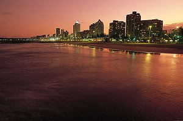

Welcome to Durban & the Golden Mile
Durban, on South Africa’s east coast, is famous for its warm Indian Ocean beaches and vibrant multicultural atmosphere. The Golden Mile is a stretch of beautiful beachfront, perfect for walking, swimming, or surfing.
Don’t miss uShaka Marine World, a major waterpark and aquarium, or exploring Durban’s markets and local Indian-influenced cuisine, which give the city its unique flavor.